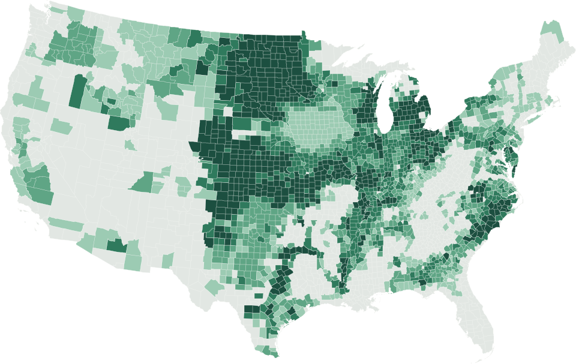
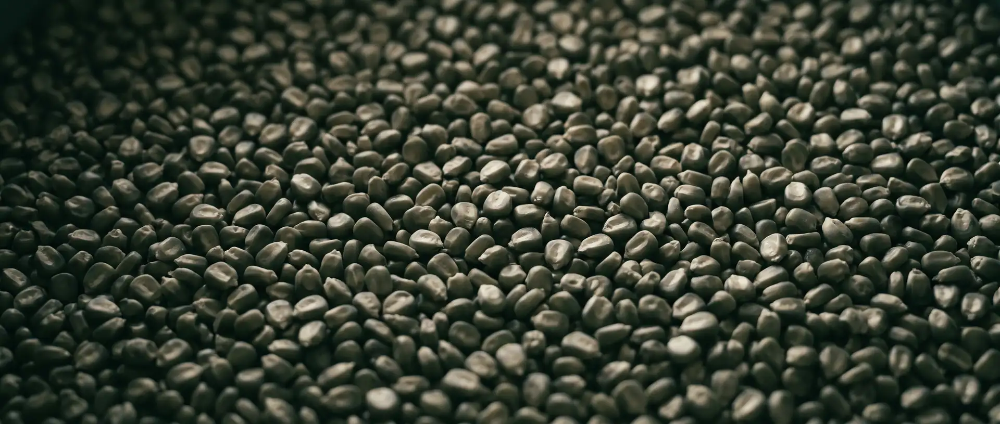

How we hold forecasts to account.
We don't have facility quality forecasts yet. These are tests of the method behind them on public data, published the way we will publish quality results: every season predicted from earlier seasons only, losing years included.
What public data can't show.
These tests go about as far as public data allows. The rest needs facility records.
- Toxin levels
- No national public record gives DON, aflatoxin or fumonisin levels by county. The test below uses insurance claims, which only see losses big enough to be paid, not the lower levels that drive price discounts.
- Test weight and falling number
- Only national or export-region averages are public, so neither was tested.
- The facility
- Results at the elevator and the truckload belong to the facilities. The planned data-licensing arrangements are how the forecasts get there.
- The method
- Rain days stand in for humidity and leaf wetness, and flowering dates are known only by state. Claims also depend on who buys insurance and how losses are adjusted.
First quality test: mycotoxin losses in every US county with a long insured record.
- Wheat, seasons ranked better than county history
- 17 of 21
- Wheat, within-season ranking (AUC), history to weather
- 0.627 → 0.736
- Corn, seasons ranked better than county history
- 13 of 21
- Corn, within-season ranking (AUC), history to weather
- 0.762 → 0.778
Crop insurance pays out when mycotoxin losses are large enough to claim, and USDA publishes claims by county and cause of loss. We asked whether weather around flowering could tell which counties would file one, better than each county's own history, predicting every year from earlier years only.
For wheat, the weather model ranks the risk better than county history in most seasons, and better than the free USDA crop condition report. For corn, the gain does not hold from one season to the next, and the condition report ranks counties as well as the weather model does. Neither calls how bad a bad year will be yet.

- Fewer to more seasons tested
- Not tested
Insurance-claim backtest, 2005 to 2025. It sees losses big enough to be paid, not lab values.
Wheat mycotoxin claims lower error in 16 of 21 seasons
Corn mycotoxin claims lower error in 13 of 21 seasons
Most wins are small. Overall, forecast error fell 1.8% for wheat and 2.1% for corn, and neither result is certain: the 95% ranges run from −4.3% to +6.4% and from −0.9% to +6.2%.
Wheat: counties with a claim
Corn: counties with a claim
Show the mycotoxin numbers as a table
| Year | Wheat: error change | Wheat: counties with a claim | Wheat: model | Wheat: county history | Corn: error change | Corn: counties with a claim | Corn: model | Corn: county history |
|---|---|---|---|---|---|---|---|---|
| 2005 | −0.8% | 2.4% | 0.5% | 0.7% | +3.4% | 5.8% | 3.4% | 2.4% |
| 2006 | +0.0% | 1.0% | 1.0% | 1.2% | +5.5% | 4.0% | 4.1% | 3.4% |
| 2007 | +1.4% | 0.5% | 0.9% | 1.1% | +3.9% | 2.4% | 2.8% | 3.5% |
| 2008 | +1.8% | 2.4% | 1.0% | 1.0% | +23.3% | 5.8% | 4.2% | 3.5% |
| 2009 | +0.8% | 5.9% | 1.4% | 1.3% | −0.2% | 13.1% | 4.7% | 4.1% |
| 2010 | +0.4% | 6.3% | 4.4% | 2.3% | +2.9% | 5.8% | 5.9% | 6.2% |
| 2011 | +1.0% | 5.1% | 2.5% | 3.2% | −2.2% | 6.5% | 5.8% | 6.6% |
| 2012 | +10.2% | 1.1% | 1.4% | 4.1% | −0.4% | 16.3% | 6.7% | 6.7% |
| 2013 | +0.7% | 5.1% | 4.8% | 3.5% | +7.8% | 2.4% | 4.1% | 8.9% |
| 2014 | +3.0% | 14.7% | 4.6% | 4.1% | +28.1% | 0.7% | 4.1% | 7.9% |
| 2015 | +12.1% | 21.9% | 10.9% | 6.8% | +23.6% | 0.9% | 3.9% | 7.0% |
| 2016 | −25.3% | 2.7% | 12.8% | 11.6% | −11.1% | 6.5% | 6.7% | 6.2% |
| 2017 | +14.0% | 0.2% | 7.1% | 9.7% | +9.9% | 4.8% | 3.0% | 6.3% |
| 2018 | −17.2% | 4.3% | 8.7% | 8.5% | +1.1% | 5.7% | 5.1% | 6.4% |
| 2019 | −2.7% | 9.6% | 12.9% | 8.0% | −3.5% | 1.8% | 4.0% | 6.3% |
| 2020 | +5.6% | 0.9% | 6.6% | 8.6% | +2.2% | 4.0% | 3.9% | 5.9% |
| 2021 | +3.6% | 1.1% | 5.7% | 7.5% | +35.3% | 0.4% | 2.9% | 5.8% |
| 2022 | +28.1% | 0.5% | 4.2% | 6.9% | −3.3% | 5.4% | 7.2% | 5.4% |
| 2023 | +42.9% | 0.3% | 3.2% | 6.3% | −5.9% | 4.4% | 4.0% | 5.4% |
| 2024 | +3.3% | 8.6% | 7.9% | 5.9% | −17.0% | 0.9% | 4.1% | 5.4% |
| 2025 | −22.1% | 3.8% | 9.5% | 6.2% | +4.4% | 1.3% | 3.3% | 5.0% |
| All years | +1.8% | 28,099 county-years | +2.1% | 33,962 county-years | ||||
Earlier test: crop yield in four states.
Before the quality test, we tested the method on corn and soybean yield in Kentucky, Indiana, Ohio and Tennessee.
On soybean yield, 16.4% lower error than trend across 13 held-out years. On corn, an early result didn't survive re-testing, so we withdrew it.
Yield backtest, 2013 to 2025. Not a quality forecast.
Soybean yield Holds up
Corn yield Withdrawn
Show the yield numbers as a table
| Year | Soybean yield | Corn yield |
|---|---|---|
| 2013 | +49.4% | +61.0% |
| 2014 | +34.6% | +56.0% |
| 2015 | +6.9% | −16.9% |
| 2016 | +7.5% | +12.2% |
| 2017 | +13.5% | −24.1% |
| 2018 | −2.5% | +35.1% |
| 2019 | −2.4% | −0.8% |
| 2020 | +1.6% | −35.0% |
| 2021 | −7.2% | +21.8% |
| 2022 | +1.5% | +36.6% |
| 2023 | −19.2% | −39.2% |
| 2024 | +27.5% | +19.2% |
| 2025 | +29.4% | −5.4% |
| All years | +16.4% | +15.2% (withdrawn) |
Sources and disclaimer.
- Mycotoxin claims
- USDA Risk Management Agency, cause of loss data by county (cause code 82, mycotoxin)
- Weather
- NOAA NCEI nClimGrid daily county data
- Flowering dates and crop yield
- USDA National Agricultural Statistics Service, crop progress reports and Quick Stats
- County boundaries
- U.S. Census Bureau cartographic boundary files
Forward Grade is not affiliated with or endorsed by USDA, NOAA or the Census Bureau. These are historical backtests on public data: hypothetical, not forecasts for any facility or season, not a guarantee of future results, and not financial, trading, insurance or agronomic advice. See the terms of use.

Want to be one of the first pilots?
No pilots are running yet. Tell us who you are on the request form and we'll reply by email.